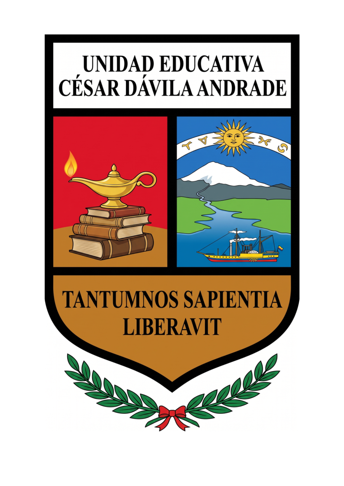
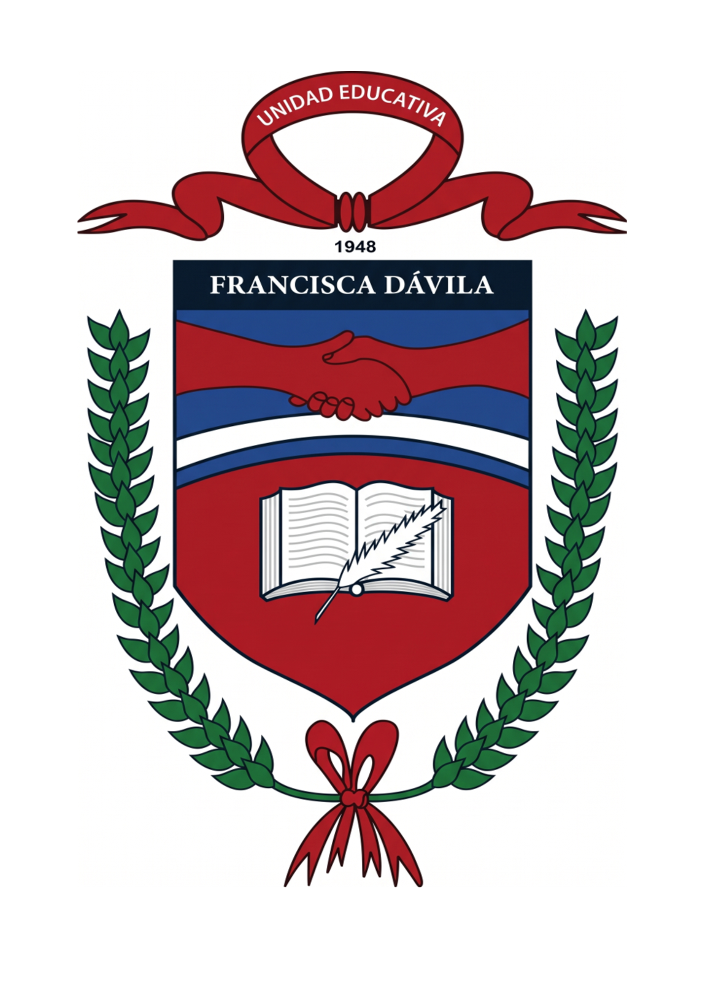
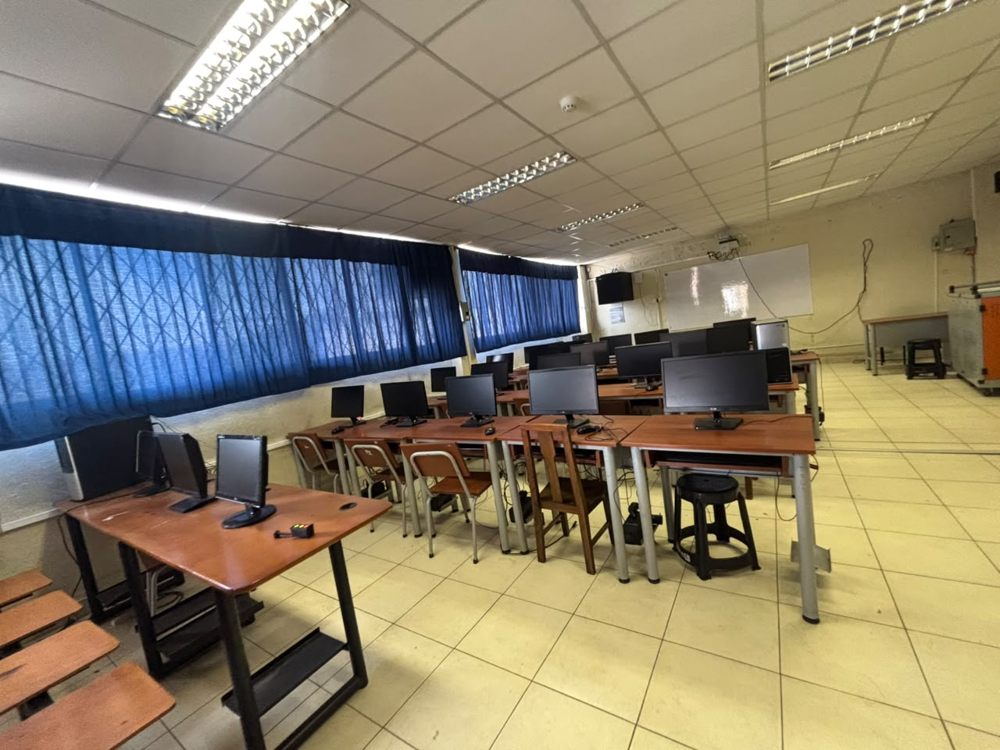
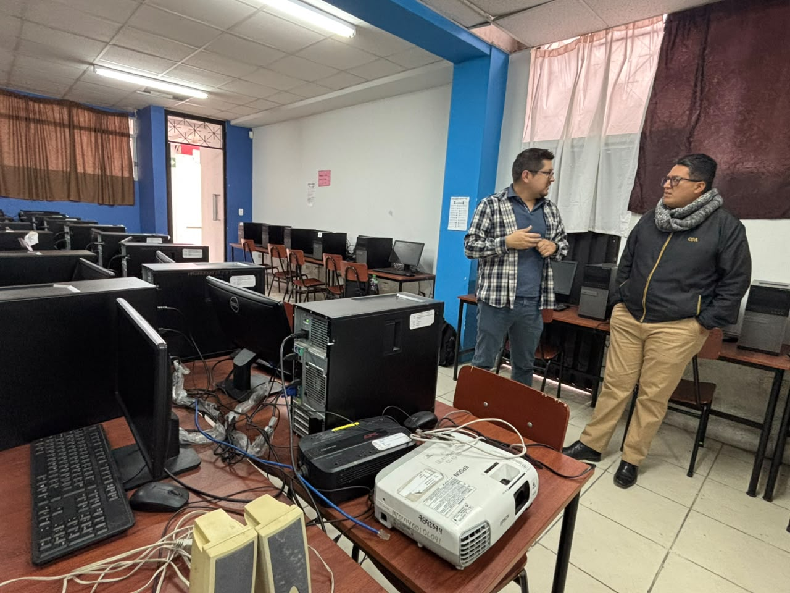
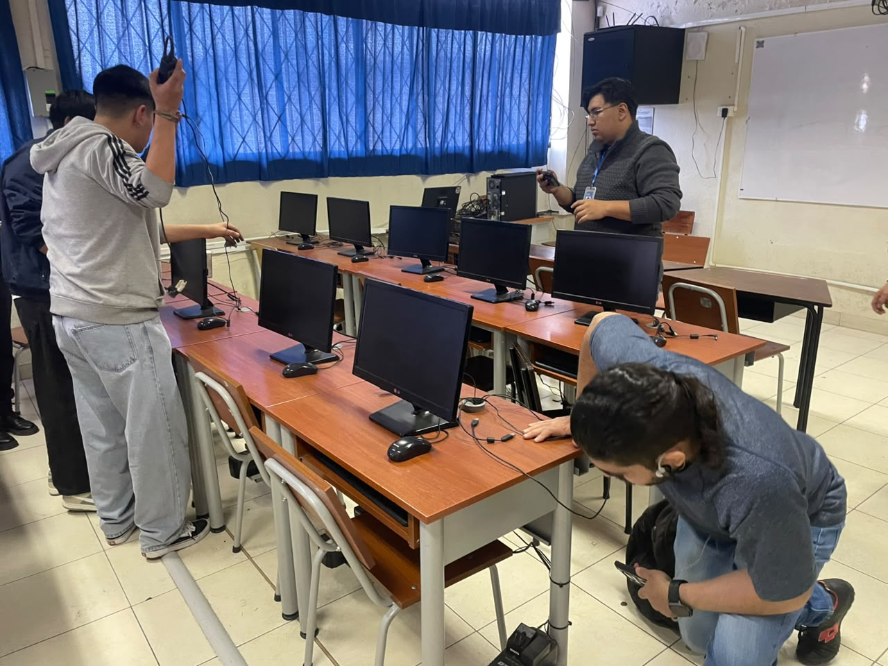
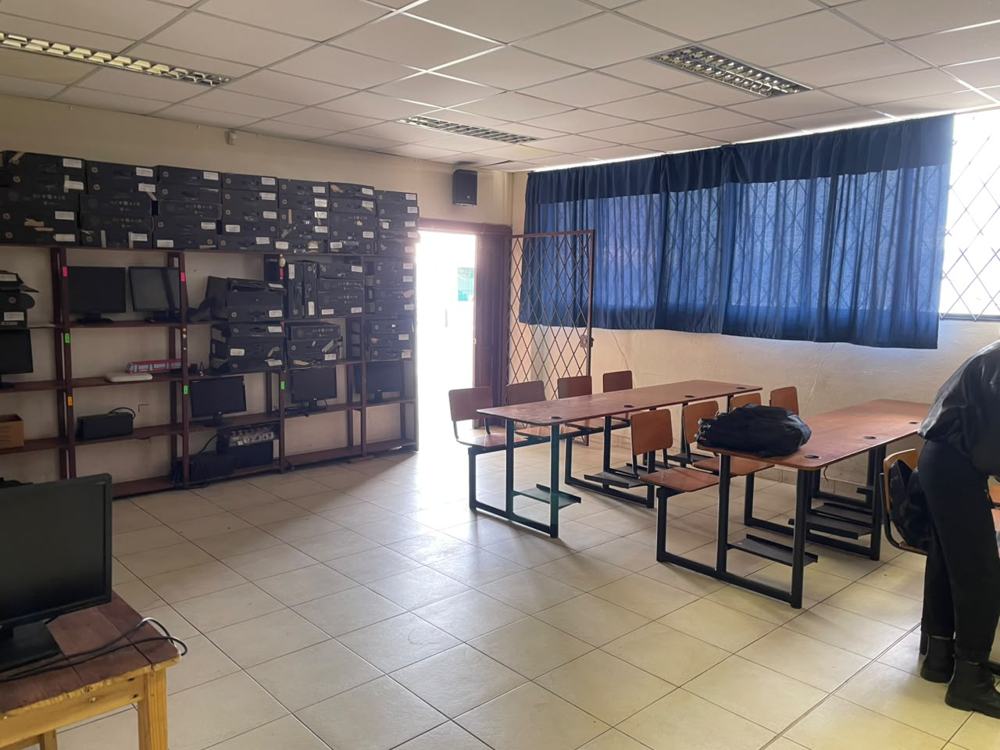
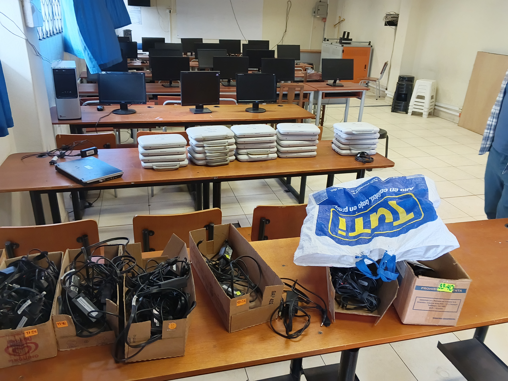
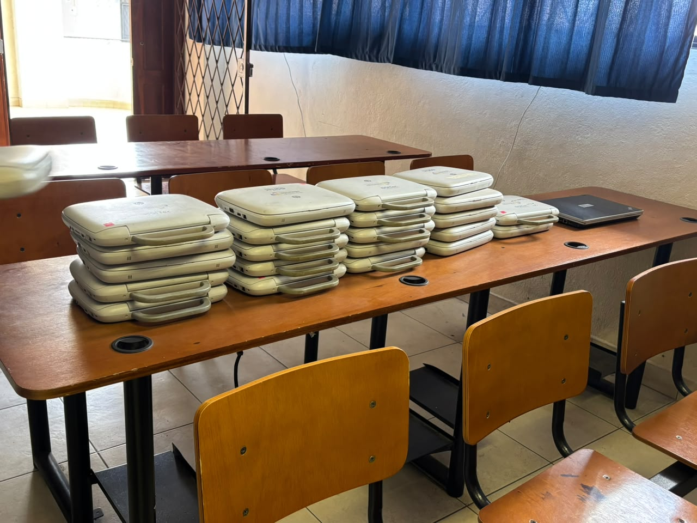

Estudios y experiencia técnica.
Trayectoria académica en la Universidad de Cuenca, complementada con experiencia práctica en mantenimiento de laboratorios de cómputo.
Bachiller en Ciencias
Unidad Educativa Antonio Ávila MaldonadoUnidad Educativa Antonio Ávila Maldonado, institución educativa fiscal de amplia trayectoria en la ciudad de Cuenca, orientada a la formación integral de niños, adolescentes y jóvenes. Ofrece educación desde el nivel Inicial hasta el Bachillerato, incorporando alternativas de formación técnica y académica. Su propuesta educativa combina conocimientos teóricos, desarrollo de habilidades prácticas y formación en valores, promoviendo el pensamiento crítico, la autonomía y la preparación de sus estudiantes para continuar estudios superiores o incorporarse al ámbito laboral.
Ver institución →Tecnología Superior en Administración de Infraestructura y Plataformas Tecnológicas
Carrera Tecnológica - Universidad de CuencaFormación técnica y tecnológica orientada al desarrollo de competencias para la instalación, operación, administración y soporte de infraestructura y servicios tecnológicos. Su preparación abarca áreas como redes, bases de datos, sistemas operativos, computación en la nube, seguridad informática y gestión de plataformas. Combina fundamentos teóricos con habilidades prácticas, promoviendo la resolución de problemas, la optimización de recursos y la continuidad de los servicios tecnológicos. Prepara profesionales capaces de responder a las necesidades de transformación digital y contribuir a la eficiencia de las organizaciones.
Ver carrera →UCuenca TEC - Unidad Académica de Formación Técnica y Tecnológica Salvador Allende
Facultad - Universidad de CuencaUnidad Académica de Formación Técnica y Tecnológica de la Universidad de Cuenca, orientada a la formación de profesionales mediante carreras de corta duración y modalidad híbrida. Su propuesta educativa combina fundamentos teóricos con aprendizaje práctico en laboratorios y talleres, fortaleciendo competencias técnicas, habilidades profesionales y capacidades para la resolución de problemas reales. De esta manera, prepara a sus estudiantes para responder a las necesidades del entorno tecnológico y productivo, facilitando su incorporación al ámbito laboral y su desarrollo profesional.
Ver facultad →

Practicante en reparación y mantenimiento de laboratorios de cómputo
Unidad Educativa Francisca Dávila Muñoz y Cesar Dávila AndradeBrindé soporte técnico en los laboratorios de cómputo, participando en actividades de mantenimiento preventivo y correctivo de equipos, diagnóstico y resolución de fallas de hardware y software, revisión del estado operativo de las estaciones de trabajo y optimización básica de su funcionamiento. Estas actividades estuvieron orientadas a garantizar la disponibilidad, estabilidad y correcto funcionamiento de los equipos utilizados en el entorno educativo.
Laboratorios de cómputo
Registro de las prácticas de mantenimiento realizadas en los laboratorios de cómputo de la Unidad Educativa Francisca Dávila Muñoz y Cesar Dávila Andrade.





